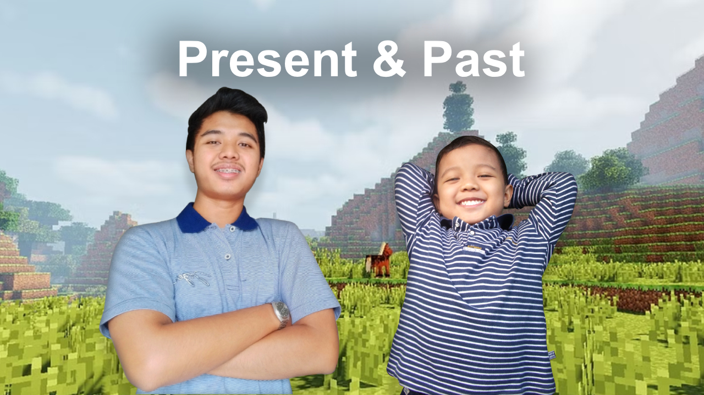

Surat Untuk Hanif Cilik
July 13, 2023
By Wicaksono Hanif Supriyanto
Sebagai anak terakhir di keluarga, gue ga pernah tahu rasanya punya adik itu seperti apa. Oleh karena itu, jadi anak bungsu di lain sisi ada ga enaknya juga, antara lain kesepian karena ditinggal anggota keluarga yang udah sibuk beraktivitas. Akibat keseringan merenung di rumah, sering terbersit di kepala gue tentang skenario-skenario mustahil. Salah satunya adalah kembali ke masa lalu.
Jika ada mesin waktu untuk bertemu masa kecil kembali, ada banyak hal yang ingin gue bicarain sama si Hanif saat dia masih kecil. Kurang lebih ini yang mau gue omongin sama dia.
“Teruntuk Hanif cilik, ada beberapa hal yang mau aku sampaikan. Beberapa hal ini sebenarnya lebih banyak soal pelajaran hidup, pelajaran hidup yang didapat dari proses dan perjalanan panjang hingga saat ini.”
“Nif, kamu sebaiknya lebih konsisten lagi dalam hal akademis. Belajar yang sungguh-sungguh, jangan hari ini kamu peringkat 2, tahun depannya malah merosot jadi peringkat 16. Bukan hal yang mudah memang untuk bertahan. Oiya Nif, meskipun kamu bisa menukarkan peringkat bagusmu dengan jutaan rupiah dari ibu dan ayah, tapi sebaiknya belajarlah karena manfaatnya bukan karena uangnya.”
“Selain itu, di masa kanak-kanak seperti ini, sebaiknya kamu bisa lebih mengontrol emosi. Kamu harus bisa bersabar dengan orang yang menyulut amarahmu. Nama awalmu adalah sifat yang seharusnya selalu ada pada dirimu, nama itu memiliki arti bijaksana dalam bahasa jawa. Kamu seharusnya lebih bijaksana dalam mengelola emosimu.”
“Bukan hanya sisi emosional, tapi kebijaksanaan itu harus kamu terapkan dalam hal lain, salah satunya adalah membuat berbagai keputusan atau yang sifatnya rasional. Minimal kamu tahu lah mana yang lebih penting hingga kurang penting, yang baik dan yang buruk, yang benar dan yang salah. Kalo bingung tanya sama ayah, ibu dan kakak-kakakmu jangan lupa!”
“Oiya Nif, dari segi spiritual, sebaiknya kamu belajar lebih khusyuk saat lagi salat, jangan pas salat mikirin habis ini mau main apa atau makan apa. Selalu ingat dengan Yang Maha Esa, InsyaAllah, Dia juga akan ingat sama kamu. Oiya, jangan mentang-mentang dosamu masih ditanggung ayah dan ibu jadi kamu bisa berbuat seenaknya.”
“Ada beberapa hal lagi yang gak kalah penting buat kamu ketahui Nif, terutama sebelum kamu tersesat dalam labirin cinta-cintaan. Kalau ada yang memuji atau bahkan suka sama kamu, itu wajib untuk kamu hargai, dan kalau kamu ga suka, jangan takut untuk nolak. Jangan digantungin nanti jadi kebiasaan, kasihan dia Nif, semua perempuan butuh kepastian. Oiya, kalau kamu berniat untuk nyari separuh dari hatimu, sebaiknya nanti aja, atau jangan sekalian, apalagi kalau belum siap bikin komitmen, nyesel banget deh pokoknya.”
“Pesan terakhir dariku, sebaiknya kamu ga usah terlalu khawatir dengan apa yang akan terjadi esok hari. Tetap berusaha dan melangkah. Masa kecil adalah untuk dinikmati karena ga akan pernah bisa terulang lagi.”
Kurang lebih itulah nasihat gue untuk Hanif di masa kecil. Kalau aja bisa ketemu, mungkin dia akan gue ajak nongkrong sambil cerita-cerita tentang masalah hari ini.